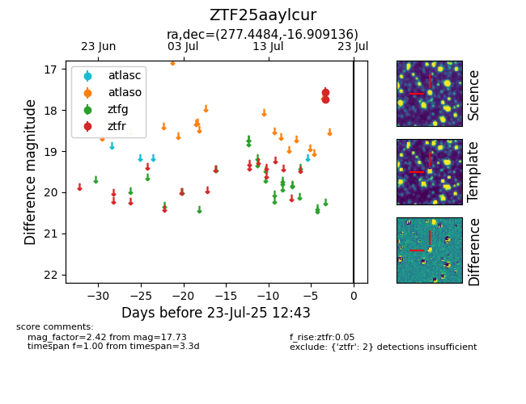

Target ZTF25aaylcur at 2025-07-23 12:43, see:
FINK: fink-portal.org/ZTF25aaylcur
Lasair: lasair-ztf.lsst.ac.uk/objects/ZTF25aaylcur
ALeRCE: alerce.online/object/ZTF25aaylcur
alt names
ZTF25aaylcur (ztf,fink)
coordinates:
equatorial (ra, dec) = (277.4484,-16.90914)
galactic (l, b) = (15.4497,-2.99951)
photometry
last ztfr=17.73
2 ztfr detections
